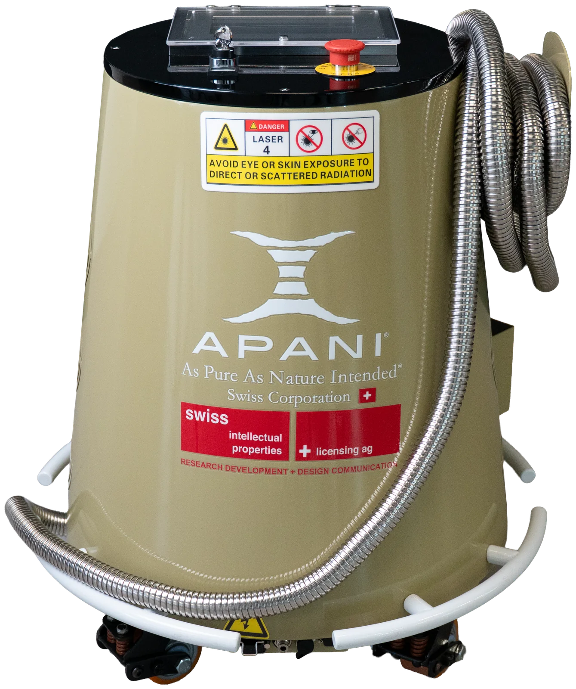
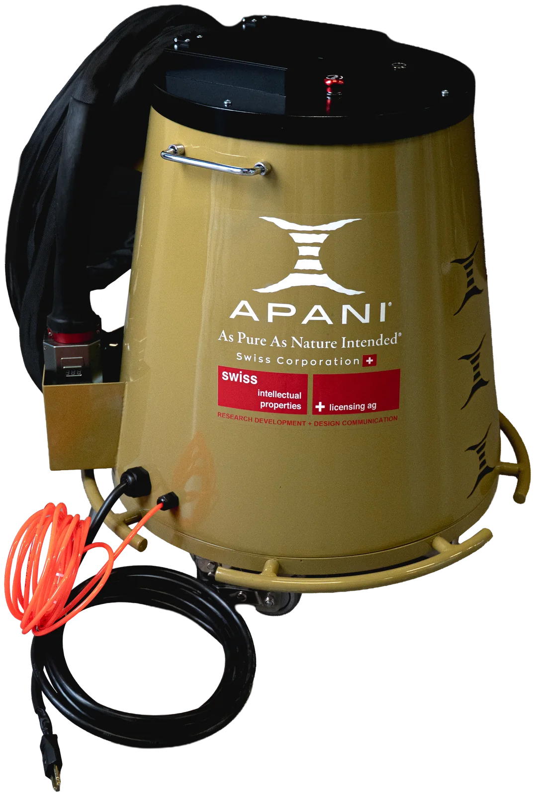

Rost entfernen mit Laser
Laser-Rostentfernung löst Oxidschichten von Stahl und Guss, ohne das Grundmaterial abzutragen. Kein Sand, keine Säure, keine Schleifscheibe — und kein Sondermüll, der danach entsorgt werden muss.

Warum immer mehr Betriebe Rost mit dem Laser entfernen
Rost ist in jeder Werkstatt ein Zeitfresser. Wer heute ein angerostetes Bauteil instand stellt, greift meist zu Drahtbürste, Fächerschleifer, Sandstrahlkabine oder Rostumwandler. Jede dieser Methoden hat ihren Preis: Schleifen trägt gesundes Metall mit ab und erreicht Kanten und Vertiefungen schlecht, Sandstrahlen verlangt eine Kabine, Abdeckarbeiten und stundenlanges Aufräumen, und Säuren oder Rostlöser bringen Dämpfe, Schutzausrüstung und Entsorgungskosten mit sich.
Bei der Laser-Rostentfernung trifft ein gepulster Laserstrahl auf die Oberfläche. Die dunkle, poröse Rostschicht nimmt die Energie auf und löst sich, das blanke Metall darunter reflektiert den grössten Teil des Lichts und bleibt intakt. Das Ergebnis ist eine saubere, metallisch blanke Fläche, die direkt weiterbearbeitet werden kann — zum Beispiel grundiert, lackiert oder geschweisst.
Weil der Laser berührungslos arbeitet, gibt es keinen Druck auf das Werkstück und keinen mechanischen Verschleiss an Bürsten oder Scheiben. Dünne Bleche verziehen sich nicht, Gewinde, Bohrungen und Kanten bleiben massgenau. Und weil kein Strahlmittel im Spiel ist, muss die Umgebung nicht aufwendig abgedeckt werden: Das Bauteil kann oft dort entrostet werden, wo es steht — in der Werkstatt, auf der Baustelle oder direkt an der Maschine.
Für Schweizer KMU ist vor allem der Ablauf interessant: Laser einstecken, Programm wählen, entrosten. Die APANI Reinigungslaser laufen an der normalen 230-V-Steckdose, benötigen keinen Wasseranschluss und sind nach einer kurzen Einschulung bei der Lieferung von jedem Mitarbeitenden bedienbar.
Laser im Vergleich zu Sandstrahlen und Schleifen
Wie sich die Laser-Rostentfernung gegenüber den klassischen Verfahren im Werkstattalltag unterscheidet.
Symbolbild — Ziehen Sie den Regler, um Vorher und Nachher zu vergleichen.
| Kriterium | Sandstrahlen | Schleifen / Bürsten | APANI Laser |
|---|---|---|---|
| Abtrag am Grundmaterial | Ja, raut auf | Ja, je nach Druck | Nein, nur der Rost |
| Verbrauchsmaterial | Strahlmittel | Scheiben, Bürsten | Keines |
| Abdecken & Aufräumen | Aufwendig | Funkenflug, Staub | Minimal, Absaugung empfohlen |
| Kanten, Gewinde, Vertiefungen | Schwer kontrollierbar | Schwer erreichbar | Präzise erreichbar |
| Dünne Bleche | Verzugsgefahr | Verzugs- und Durchschliffgefahr | Kein mechanischer Druck |
| Einsatzort | Kabine / Strahlplatz | Überall | Überall mit 230 V |
So funktioniert die Laser-Entrostung
1. Parameter wählen
Am Touchscreen wird das passende Programm für Rostgrad und Material gewählt — leichter Flugrost braucht weniger Energie als dicker Zunder.
2. Fläche abfahren
Der Reinigungskopf wird in kurzem Abstand über die Fläche geführt. Der Scanner verteilt die Laserpulse gleichmässig in einer Linie.
3. Weiterverarbeiten
Die Oberfläche ist blank und trocken. Sie kann sofort grundiert, beschichtet, geschweisst oder geprüft werden.
Wo die Laser-Rostentfernung ihre Stärken ausspielt
Vom Einzelteil in der Restauration bis zur Serienreinigung in der Produktion.
In der Carrosserie wird der Laser vor allem dort geschätzt, wo es eng wird: an Falzen, Schweisspunkten und Blechkanten, wo die Schleifscheibe zu viel wegnimmt. Im Metall- und Stahlbau werden Träger, Geländer und Tore vor dem Neuanstrich entrostet, ohne dass ein Strahlplatz eingerichtet werden muss. In der Instandhaltung lassen sich Maschinenteile, Wellen und Werkzeuge reinigen, ohne Passungen oder Masse zu verändern.
Welcher APANI Laser passt zu Ihrer Rostentfernung?
Die Flächenleistung hängt stark vom Rostgrad ab. Als Richtwert für leichten Rost gelten beim AP300 rund 1–3 m² pro Stunde und beim AP500 rund 3–6 m² pro Stunde. Bei starkem Zunder sind die Werte entsprechend tiefer — am besten sehen Sie den Unterschied bei einer Live-Präsentation.
AP300
Laser-Reinigungssystem- Für Werkstatt, Carrosserie und Restauration
- Leichter Rost: ca. 1–3 m²/h
- Kompakt und mobil
- 230 V Plug & Play

AP500
Laser-Reinigungssystem- Für grössere Flächen und Serien
- Leichter Rost: ca. 3–6 m²/h
- Benötigt bauseitigen Kompressor
- 230 V Plug & Play
Erst sehen, dann entscheiden
APANI begleitet Sie vom ersten Test bis zum Service — direkt aus der Schweiz.
Live-Präsentation
Die Präsentation findet bei unserem Partner Carrosserie & Spritzwerk Marty in Wangen SZ statt.
Testgerät & Leasing
Testen Sie den Laser im eigenen Betrieb oder verteilen Sie die Investition über Leasing. Preise und Konditionen erhalten Sie auf Anfrage.
Einschulung inklusive
Bei der Lieferung schulen wir Ihr Team direkt am Gerät — Bedienung, Parameter und sicheres Arbeiten.
230 V Plug & Play
Normale Steckdose, kein Wasseranschluss, keine Kabine. Der Laser ist sofort dort einsatzbereit, wo die Arbeit anfällt.
2 Jahre Garantie
Alle APANI Laser kommen mit zwei Jahren Garantie — für einen sorgenfreien Einstieg in die Lasertechnik.
Service in der Schweiz
Wartung und Service übernimmt APANI selbst in der Schweiz — ohne Umwege über ausländische Servicestellen.
Häufige Fragen
Beschädigt der Laser das Metall unter dem Rost?
+Nein, bei korrekt eingestellten Parametern nicht. Der Rost nimmt die Laserenergie deutlich stärker auf als das blanke Metall. Sobald die Oxidschicht entfernt ist, wird der grösste Teil des Lichts reflektiert. Bei der Einschulung zeigen wir, welche Einstellungen für welches Material passen.
Wie schnell geht die Laser-Rostentfernung?
+Das hängt vom Rostgrad und von der Leistung ab. Als Richtwert für leichten Rost: AP300 ca. 1–3 m²/h, AP500 ca. 3–6 m²/h. Dicker Zunder oder mehrschichtige Korrosion braucht mehr Zeit. Bei kleinen, verwinkelten Teilen liegt der Vorteil weniger in den Quadratmetern als in der wegfallenden Nacharbeit.
Muss die Oberfläche nach dem Lasern nachbehandelt werden?
+Blankes Stahlblech beginnt an der Luft wieder zu oxidieren. Deshalb wird die entrostete Fläche wie nach dem Strahlen zeitnah grundiert oder beschichtet. Schleifen oder Reinigen von Strahlmittelresten entfällt.
Brauche ich eine Strahlkabine oder einen Wasseranschluss?
+Nein. Die APANI Reinigungslaser laufen an 230 V. Der AP500 benötigt zusätzlich einen bauseitigen Kompressor. Für den Rauch, der beim Abtragen entsteht, empfehlen wir eine Absaugung bzw. einen Filter.
Kann ich den Laser vor dem Kauf testen?
+Ja. Die Live-Präsentation findet bei unserem Partner Carrosserie & Spritzwerk Marty in Wangen SZ statt. Zusätzlich bieten wir ein Testgerät sowie Leasing an.
Weitere Anwendungen: Laser-Lackentfernung · Schweissnaht-Reinigung mit Laser · Spezialreinigung mit Laser